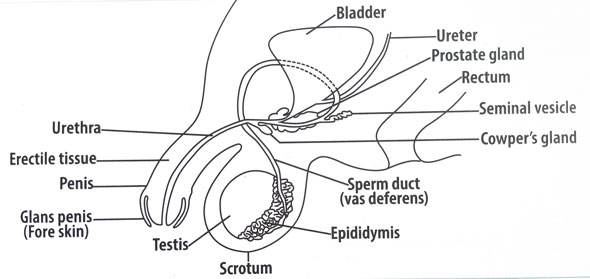

Diagram of the male reproductive system of man
| Sexual Reproduction | Asexual Reproduction |
|---|---|
| Involves two parents | Involves a single parent |
| Involves the fusion of male and female gametes (fertilization) | No fusion of gametes (No fertilization) |
| Offspring show genetic variation | Offspring are genetically identical to the parent |
| Involves meiosis to produce gametes | Involves mitosis for reproduction |
| Involves formation of zygote | No zygote formation |
| Slow method of reproduction | Fast method of reproduction |
| Fewer offspring are produced | Many offspring are produced |